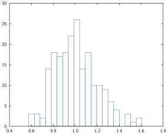
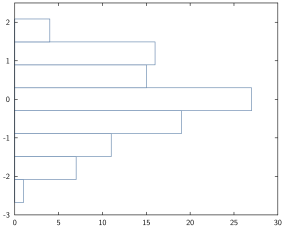
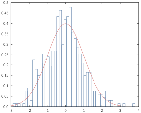
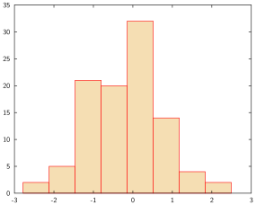

Histograms and Bar plots
Syntax
The relevant commands here are
histandhist!,barandbar!.
The general syntax is:
bar(data_to_plot...; options...)Data formats
For bars, the situation is pretty much identical as for line and scatter plots (see here) with the exception of an implicit function (not allowed for bar or hist).
For instance:
data = [1 2; 1 2; 5 7; 2 3]
bar(data)
For histograms, one difference is that they can only be drawn one at the time so that the syntax is always hist(x; opts...) where x is a vector:
For instance:
data = exp.(randn(200)/5)
hist(data; nbins=20)
Styling options
General histogram options
- horizontal [
horizorhorizontal]: takes a boolean indicating the orientation of the histogram.
data = randn(100)
hist(data; horiz=true)
number of bins [
binsornbins]: takes a positive integer indicating the number of bins that should be used (default uses Sturges' formula).scaling [
scaling]: takes a string describing how the bins should be scaled.
| Value | Comment |
|---|---|
"none" or "count" | number of entries in a range |
"pdf" | area covered by the bins equals one |
"prob" or "probability" | count divided by the overall number of entries |
If you want to add a probability density function plot on top of a histogram, pdf is usually the scaling you will want.
x = randn(500)
hist(x; nbins=50, scaling="pdf")
plot!(x -> exp(-x^2/2)/sqrt(2π), -3, 3)
General bar options
- horizontal [
horizorhorizontal]: same as for histograms. - stacked [
stacked]: takes a boolean indicating whether to stack the bars (true) or put them side by side (false) when drawing multiple bars. Note that when stacking bars, it is expected that subsequent bars are increasing (so for instance7,8,10and not7,5,10); see the example below:
# percentages
data = [30 40 30; 50 25 25; 30 30 40; 10 50 40]
# cumulative sum so that columns increase
data_cs = cumsum(data; dims=2)
bar(data_cs; stacked=true, fills=["midnightblue", "lightseagreen", "lightsalmon"])
- bar width [
width,bwidthorbarwidth]: takes a positive number indicating the width of the bars.
data = [10, 50, 30]
bar(data; width=1, fill="hotpink")Bar style options (Bar and Histogram)
Both histograms and bars share styling options for the style of the bars (essentially: their edge and fill colour). Note that since bars can be drawn in groups, each option can take a vector of values corresponding to the number of bars drawn. If a single value is passed, all bars will share that option value.
- edge colour [
ecol,edgecol,edgecolor,ecols,edgecolsoredgecolors]: takes a colour for the edge of the bars. If the edge colour is specified but not the fill colour, then the fill colour is set to white.
hist(randn(100); col="powderblue")
- fill colour [
col,color,cols,colors,fillorfills]: takes a colour for the filling of the bars. If the fill colour is specified but not the edge colour, then the edge colour is set to white.
hist(randn(100); ecol="red", fill="wheat")
Notes
Missing, Inf or NaN values
- For histograms, only
missingvalues are allowed, attempting to plot a histogram withInforNaNwill throw an error, if you still want to do it, you should pre-filter your vector of values before trying to display it. - For bars, the same rule as for
plotapplies: these values will be ignored (meaning that some bar will not show).
Modifying the underlying data
The same comment as the one made in line and scatter plots holds for in-place modification of the data.